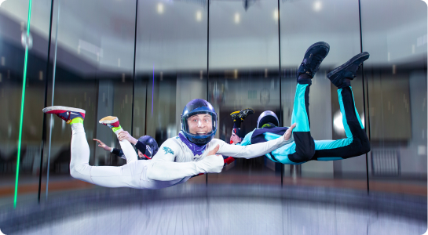

Мастерство в воздухе можно ковать
на земле!
Полная стоимость курса прохождения AFF зависит от количества прыжков и перепрыжек.
Один уровень – это один прыжок с выполнением плана прыжка, либо перепрыжка с повторением, которое требуется
для получения зачета.
Именно поэтому аэротруба Freezone может стать незаменимым помощником в прохождении курса AFF. Стоимость
полета в аэротрубе существенно ниже, чем стоимость прыжков и перепрыжек по программе AFF. Также немаловажным
преимуществом аэротрубы, пе
Что входит в программу подготовки к AFF
в аэродинамической трубе Парка Freezone
-

Подготовка к AFF Стандарт
4 занятия по 45 минПн – Вт 8.00-18.00
Что входит:Стоимость 30 000 ₽15 минут полета в аэротрубе 15 мРазбор полёта: 15 минутРабота инструктораЭкипировка -
Подготовка к AFF Прайм
4 занятия по 45 минСр – Пт 19.00-23.00,
Выходные/праздники 8.00-23.00Что входит:Стоимость 34 000 ₽15 минут полета в аэротрубе 15 мБрифинг 15 минут 15 минутРазбор полёта: 15 минутРабота инструктораЭкипировка
Тренерский состав